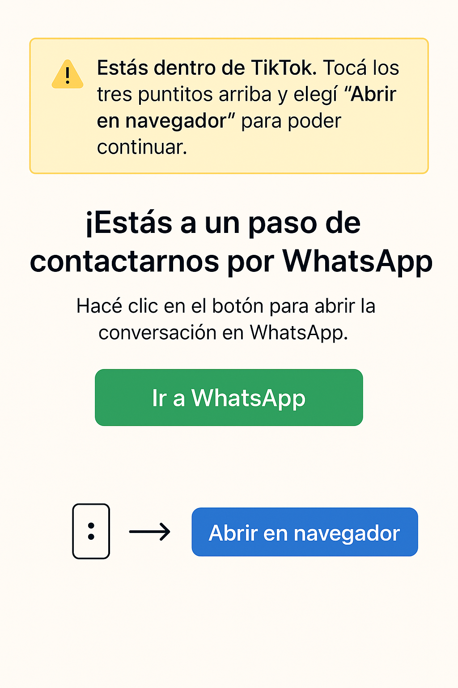

⚠️ Estás usando TikTok. Tocá los 3 puntitos arriba y seleccioná "Abrir en navegador" para poder abrir WhatsApp correctamente.
¿Cómo abrir en navegador?

¡Estás a un paso de contactarnos por WhatsApp!
Hacé clic en el botón para abrir la conversación en WhatsApp.